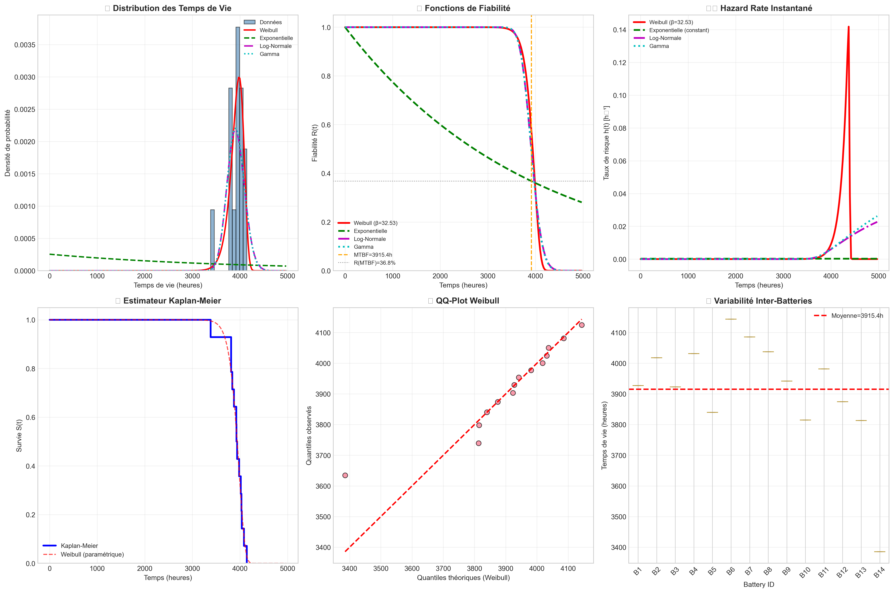
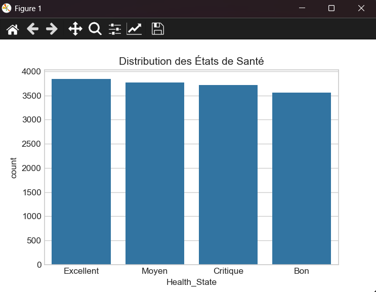
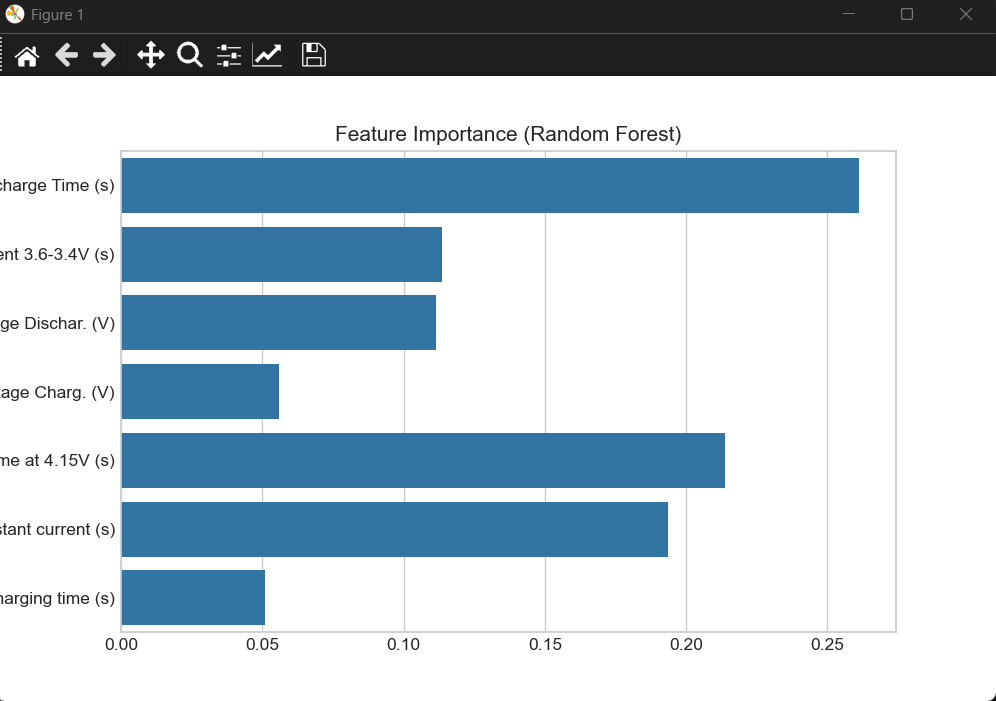
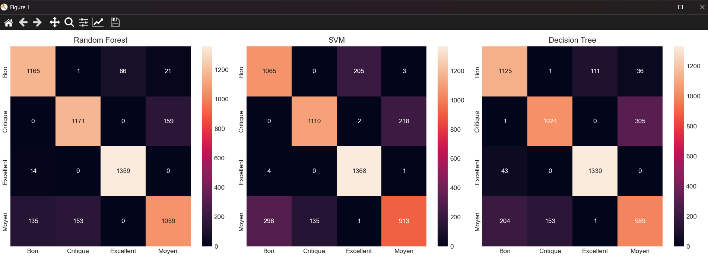
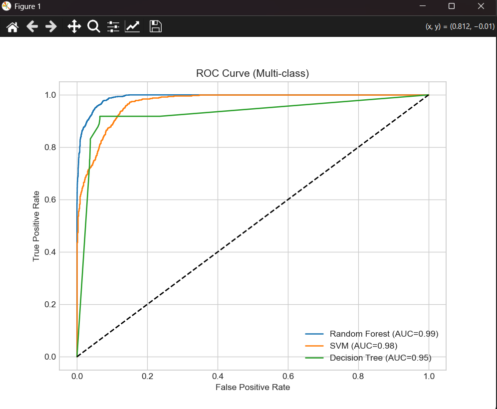
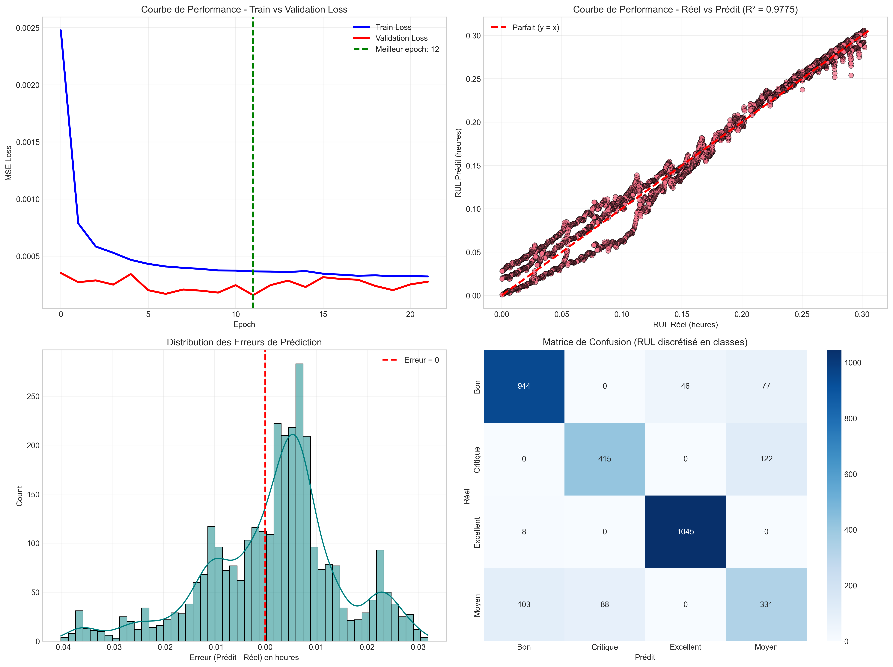
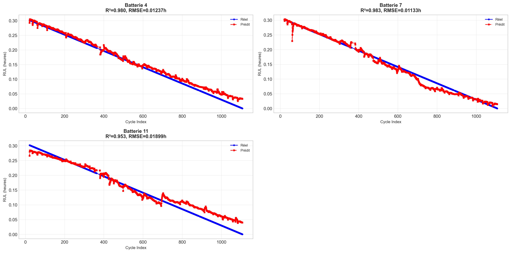

Batteries Lithium-ion 18650 | Étude réalisée par Noujoud Ouni
Les batteries lithium-ion (NMC-LCO 18650 – 2.8 Ah) sont essentielles dans les véhicules électriques, le stockage d'énergie renouvelable et les systèmes critiques. Prédire leur durée de vie restante (RUL) permet d'anticiper les pannes, d'optimiser la maintenance prédictive et de prolonger leur usage en seconde vie.
📂 Dataset : Hawaii Natural Energy Institute – 14 cellules – plus de 1000 cycles à 25°C – Charge C/2 – Décharge 1.5C.
⚠️ Définition du RUL : Dans cette étude, le RUL correspond au temps de décharge restant (en heures) calculé à partir des paramètres temporels de chaque cycle. Il ne s'agit pas du RUL classique exprimé en nombre de cycles restants jusqu'à 80% de capacité nominale.
📥 Télécharger le Dataset
Figure 1: Analyse FMDS complète - Distribution des temps de vie, fonctions de fiabilité, hazard rate, Kaplan-Meier, QQ-Plot Weibull et variabilité inter-batteries
Analyse de la distribution des temps de vie des batteries avec ajustement des lois Weibull, Exponentielle, Log-Normale et Gamma.
Le taux de risque instantané montre une augmentation significative après ~4000 heures, indiquant le début de la phase d'usure.
Classification des batteries en 4 états de santé basés sur le RUL restant (temps de décharge) :

Figure 2: Distribution des états de santé des batteries - Dataset équilibré avec 4 classes (Excellent: 3838, Moyen: 3772, Critique: 3717, Bon: 3564 cycles). Cette distribution équilibrée permet un apprentissage non biaisé.

Figure 3: Importance des features selon le modèle Random Forest - Discharge Time (26%), Time at 4.15V (21%) et Time constant current (19%) dominent la prédiction. Ces paramètres temporels de décharge sont les indicateurs les plus fiables de l'état de santé.
📖 En savoir plus sur la dégradation
Figure 4: Comparaison des matrices de confusion pour les trois modèles. Random Forest excelle avec une excellente détection diagonale (Excellent: 1359, Bon: 1165, Critique: 1171, Moyen: 1059 corrects). SVM montre des confusions entre Moyen et Excellent (205 erreurs). Decision Tree présente des performances intermédiaires.

Figure 5: Courbes ROC multi-classes comparant les trois modèles. Random Forest domine avec AUC=0.99, suivi de SVM (AUC=0.98) et Decision Tree (AUC=0.95). Tous les modèles dépassent 0.95, indiquant une excellente capacité de discrimination entre les classes.
✅ Meilleures performances globales avec une excellente généralisation
⚠️ Confusions entre classes adjacentes (Moyen/Excellent)
📊 Modèle interprétable mais moins performant que RF
Le modèle Random Forest est retenu pour le diagnostic avec 89.31% de précision. L'AUC de 0.9882 confirme l'excellente séparabilité des classes.
Évaluation comparative de 5 architectures de deep learning et machine learning pour la prédiction du Remaining Useful Life.
| Modèle | R² | RMSE (h) | MAE (h) | MAPE (%) | RA | α-λ 20% (%) | Remarque principale |
|---|---|---|---|---|---|---|---|
| LSTM MEILLEUR | 0.9753 | 0.0138 | 0.0103 | 37.0 | 0.63 | 66.0 | Meilleur suivi dynamique + fin de vie |
| Random Forest | 0.9761 | 0.0137 | 0.0092 | 37.8 | 0.62 | 68.1 | Très stable – rapide – bon compromis |
| XGBoost | 0.9743 | 0.0142 | 0.0101 | 41.0 | 0.59 | 64.8 | Excellente feature importance |
| GRU | 0.9607 | 0.0174 | 0.0131 | – | – | – | Moins performant que LSTM |
| CNN 1D | 0.9469 | 0.0202 | 0.0153 | – | – | – | Moins adapté aux longues séquences |

Figure 6: Visualisations complètes LSTM - Training Loss, Réel vs Prédit, Distribution des erreurs

Figure 7: Courbes RUL réel vs prédit par batterie - Excellent suivi de la dégradation sur les 3 batteries test
| Set | Batteries | Cycles | % |
|---|---|---|---|
| Train | 9 | 9,478 | 70% |
| Validation | 2 | 2,094 | 15% |
| Test | 3 | 3,179 | 15% |
Le modèle LSTM suit l'évolution de la dégradation cycle après cycle.
| Batterie | Cycles Test | RUL Réel (h) | RUL Prédit (h) | Erreur (h) | Erreur (min) | R² | RMSE (h) | MAE (h) |
|---|---|---|---|---|---|---|---|---|
| Batterie 4 | 1061 | 0.000278 | 0.018974 | +0.018696 | 1.12 | 0.9906 | 0.008515 | 0.007400 |
| Batterie 7 MEILLEUR | 1061 | 0.000278 | 0.000786 | +0.000509 | 0.03 | 0.9833 | 0.011328 | 0.007933 |
| Batterie 11 | 1057 | 0.000278 | 0.028055 | +0.027777 | 1.67 | 0.9693 | 0.015387 | 0.012613 |
Batterie 7: Prédiction quasi-parfaite avec une erreur de seulement 0.03 minute (1.8 secondes) en fin de vie.
Cette étude démontre la faisabilité d'un système complet de maintenance prédictive pour batteries lithium-ion combinant analyse FMDS, diagnostic par Random Forest (89.31% accuracy, AUC 0.988) et pronostic par LSTM (R² 97.53%, erreur inférieure à 1 minute). Les résultats sont très encourageants dans le cadre des conditions contrôlées du dataset HNEI. Néanmoins, compte tenu de la taille limitée du dataset et de l'absence de variabilité opérationnelle réelle, une validation sur un plus grand nombre de cellules et en environnement réel est recommandée avant un déploiement industriel.